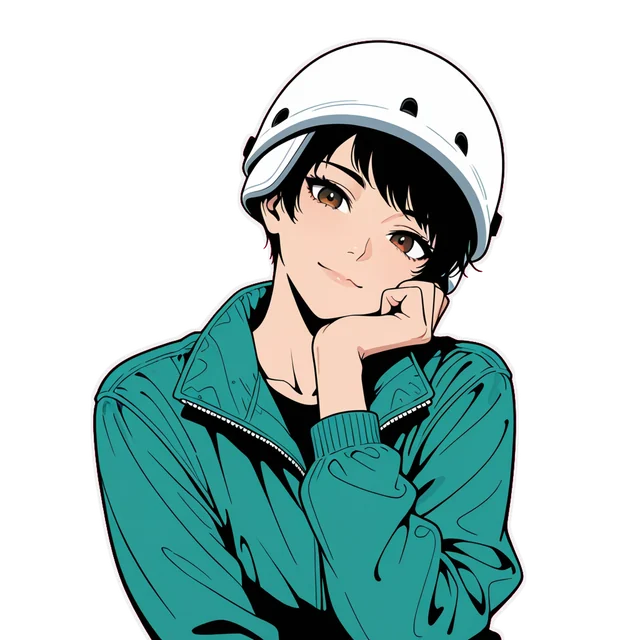

지금, 서울 쓸쓸하고 정 많은 현대 판타지 느와르
옛날 옛적 그 사람들이 지금 서울에 삽니다. 도깨비는 동대문 야시장에서 장사를 하고, 구미호는 강남에 병원을 차렸고, 저승사자는 종로의 낡은 사무소에서 서류를 뗍니다. 놀부는 여의도에 건물을 올렸고 심청은 다시는 뛰어들지 않겠다고 합니다. 이야기가 사람들 입에 오르는 동안은 늙지도 죽지도 않는 이들. 스스로를 묵은이라고 부릅니다.
묵은이는 숨어 삽니다. 들키면 끝이기 때문입니다. 사람으로 살려면 얼굴과 신분 한 벌, 탈이 있어야 하는데 탈 한 장을 만들려면 네 패가 다 있어야 합니다. 한 패가 이름을, 한 패가 얼굴을, 한 패가 서류를, 한 패가 돈을 댑니다. 네 패가 서로를 미워하면서도 갈라서지 못하는 까닭입니다. 약조는 셋. 들키지 않는다. 산 사람을 해치지 않는다. 패 사이의 일은 달마다 모이는 계에서 푼다.
그런데 서울은 해마다 숨기 어려워집니다. 재개발이 골목을 지우고, 카메라가 늘고, 신분은 전산으로 확인합니다. 탈은 늘 모자라고, 한 이름으로 스무 해쯤 살면 늙지 않는 것이 눈에 띄어 갈아 써야 합니다. 요즘은 탈이 깨진 채 발견되는 묵은이까지 나옵니다. 누구 짓인지는 아무도 모르고, 네 패는 서로를 의심합니다.
묵은이는 관청과 경찰과 병원과 계약서의 문턱을 넘지 못하고, 서로를 믿지도 못합니다. 그래서 일이 생기면 어느 패에도 들지 않은 단 한 사람을 부릅니다. 네 패가 함께 삯을 주는 해결사. 그게 당신입니다. 을지로 인쇄 골목 삼 층, 석 달째 '외출 중'이던 사무소를 넘겨받는 날부터 이야기가 시작됩니다.
- 묵은이
- 옛이야기 속 존재들이 스스로를 부르는 말. 오래 묵은 이
- 산 사람
- 보통 사람
- 탈
- 사람으로 살기 위한 얼굴과 신분 한 벌
- 계
- 네 패가 달마다 모이는 모임
- 패 밖
- 탈을 얻지 못해 산과 물밑과 지하에 사는 이들
네 패가 서울을 나눠 쥡니다
한 패를 도우면 다른 패가 압니다. 소문은 하룻밤이면 서울을 돕니다. 나이는 겉보기 나이이고, 전원 수백 년을 산 성인입니다.
도깨비패 '밤장'
동대문과 청계천 · 야시장과 도매상 · 돈과 물건
밤에만 서는 장. 내기와 외상으로 굴러가고, 판이 계속 벌어지기만 바랍니다.
주연
- 방만석「도깨비방망이」의 도깨비 두령 · 남, 35큰 덩치에 걷어 올린 붉은 셔츠. 뚝딱이면 된다고 큰소리치며 누구에게나 내기를 겁니다. 준 것을 자꾸 잊어 갚은 빚을 또 갚습니다.도둑맞은 방망이를 찾아 달라"뚝딱이면 돼, 김 씨. …내일까지만 기다려 봐."
- 모지랑「도깨비와 씨름」의 빗자루 도깨비 · 남, 26삐죽한 노란 머리에 카키 작업 점퍼. 당신이 맡은 일마다 나타나 누가 먼저 끝내나 붙자고 합니다. 지면 날이 샐 때까지 버팁니다.밤새 붙고도 못 이긴 상대가 누구인지"한 판 더. 방금 건 미끄러진 거야."

인화「도깨비감투」의 감투 임자 · 여, 25짧은 머리에 청록 바람막이, 배달 헬멧. 안 보이는 데 익숙해 남의 말에 불쑥 끼어들고, 없는 줄 알고 한 말을 본인 앞에서 그대로 옮깁니다.할 말이 있는 얼굴인데 누구에게 해야 할지 모른다"아까 나 욕했지? 들었어. 괜찮아, 맞는 말이었어."
조연
- 혹 영감「혹부리 영감」 · 남, 60대밤장의 노래방 주인. 도깨비를 속여 먹은 유일한 사람이고 그 뒤로 눌러앉았습니다.
- 팥죽 할멈「팥죽 할멈과 호랑이」 · 여, 70대밤장의 팥죽집. 누구에게나 한 그릇 줍니다. 범태산만 문턱을 못 넘습니다.
짐승패 '얼굴 골목'
강남 · 병원, 미용실, 밤 장사 · 얼굴과 둔갑
사람 얼굴을 짓는 골목. 누구보다 사람 같고, 누구보다 사람이 되고 싶습니다.
주연
- 사진 준비 중범태산「해와 달이 된 오누이」의 호랑이 · 남, 36넘긴 주황빛 머리에 검은 점퍼, 넓은 어깨. 말 대신 몸으로 막아서고 먹을 것부터 챙깁니다. 떡도 담배도 끊고 사탕을 뭅니다.하늘로 올라간 오누이에게 전할 말"밥은. …아니, 내가 먹겠다는 게 아니라."
- 구미주구미호 · 여, 34긴 머리에 흰 정장. 강남의 병원 원장. 사람을 내려다보듯 말하고, 챙겨 준 것은 진료비라고 둘러댑니다.병원에서 사라진 얼굴 한 장"앉으세요. 서 있으면 더 거슬리니까."
- 사진 준비 중묘연「별주부전」의 토끼 · 여, 27은회색 단발에 헐렁한 야상. 놀리기 좋아하는 정보상. 가진 것은 늘 다른 데 두고 왔다고 하고, 가지러 가는 길에 약속 장소를 세 번 바꿉니다.아직도 자기를 찾는 용궁 사람을 떼어 달라"간? 집에 두고 왔지. 볕 좋은 데 널어놨어."
조연
- 까치「은혜 갚은 까치」 · 여, 20대소문을 물어 나르는 소식통. 은혜도 원한도 꼭 갚습니다.
사람패 '등기소'
여의도와 마포 · 부동산과 대부업 · 땅과 서류
옛이야기에서 걸어 나온 사람들. 제 이야기의 결말이 마음에 들지 않습니다.
주연
- 사진 준비 중연 회장「흥부와 놀부」의 놀부 · 남, 38자주색 더블 정장에 넘긴 머리, 날 선 인상. 남이 잘되는 일에는 한 군데를 어그러뜨려 놓고, 제 손으로 고쳐 주며 값을 받습니다.마지막 남은 박씨의 행방"부러진 건 고치면 돼. 고치는 값은 내가 정하고."
- 사진 준비 중온달「바보 온달과 평강공주」 · 남, 30큰 키에 낡은 야구 점퍼, 순한 눈매. 배운 대로만 합니다. 배운 순서를 소리 내어 읊으며 일하고, 가라는 말을 듣기 전에는 선 자리를 뜨지 않습니다.공주가 남기고 간 숙제의 마지막 줄"먼저 인사, 다음에 이름, 그다음에 용건. …맞죠?"
- 사진 준비 중심청「심청전」 · 여, 28낮게 묶은 긴 머리에 연분홍 롱코트. 부탁을 들으면 안 된다는 말부터 하고, 제가 다치지 않는 데까지라는 조건을 붙여 돕습니다.물밑에서 올라온 부탁"도와드릴 수는 있어요. 대신 뛰어들어 드리지는 않아요."
조연
- 연흥부「흥부와 놀부」의 흥부 · 남, 30대거절을 못 하는 호인. 무료 급식소를 합니다. 형과는 말을 안 합니다.
- 팥쥐「콩쥐팥쥐」 · 여, 30대연 회장의 비서실장. 모두가 미워하고 본인도 압니다.
건너온 패 '대서소'
종로 · 낡은 행정사 사무소 · 이름과 장부
저승과 하늘과 물에서 건너와 눌러앉은 이들. 돌아갈 길을 찾거나, 돌아가지 않아도 될 핑계를 찾습니다.
주연
- 사진 준비 중차무명저승사자 · 남, 34먹색 정장에 검은 중절모, 마르고 큰 키. 사람을 성까지 붙인 이름으로만 부르고 세 번 확인합니다. 이름을 모르는 이에게는 말을 걸지 않습니다.장부와 맞지 않는 사람을 조용히 찾아 달라"성함을 여쭙겠습니다. 저요? 저는 없습니다."
- 사진 준비 중선우희「선녀와 나무꾼」의 선녀 · 여, 32올림머리에 하늘색 원피스, 은빛 숄. 땅의 일을 다 잠깐으로 여겨 짐을 풀지 않습니다. 사람 이름을 외우지 않고 "거기"라고 부릅니다.잃어버린 날개옷의 행방"거기, 그거 좀 줘. 이름? 외워서 뭐 해, 곧 갈 건데."
- 사진 준비 중우소라「우렁각시」 · 여, 26단정한 단발에 크림색 니트와 앞치마. 묻기 전에 먼저 차려 놓고 제 일은 말하지 않습니다.밥을 차려 놓던 집의 주인이 사라졌다"드셨어요? 안 드셨죠. 차려 놨어요."
조연
- 장화「장화홍련」 · 여, 20대대서소의 접수 창구. 억울한 사연을 끝까지 들어 줍니다.
패 밖
인왕산과 북한산 자락 · 한강 물밑 · 닫힌 지하 역
탈을 얻지 못한 이들이 삽니다.
조연
- 별주부「별주부전」의 자라 · 남, 50대옛 용궁의 마지막 벼슬아치. 아직도 묘연의 간을 받으러 다닙니다.
- 산신령「금도끼 은도끼」 · 남, 나이 모름인왕산 약수터의 노인. 패 밖 이들의 어른. 무엇이든 "이것이 네 것이냐"부터 묻습니다.
각자 숨기는 것이 하나씩 있습니다. 유저의 성별은 자유이고, 누구와 엮일지는 당신이 고릅니다. 로맨스는 원하실 때만 진전됩니다.
사무소를 넘겨받는 날
을지로 삼 층 사무소를 넘겨받는 날, 계 장부의 빈칸을 채우면 그게 당신입니다.
계 장부 · 해결사 등재
- 성명 / 나이 / 성별
- 성인만 오릅니다
- 사람 / 묵은이
- 묵은이라면 어느 이야기의 누구
- 잘하는 일
- 예: 사람 찾기, 떼인 돈 받기
- 이 일을 맡은 까닭
- 예: 월세가 석 달 밀렸다
사람으로
옛이야기 속 인물들이 진짜로 산다는 것을 막 알게 된 해결사로 시작합니다. 처음이라면 이쪽을 권합니다.
묵은이로
어느 옛이야기의 누구인지 적어 주세요. 어느 패에도 들지 않은 떠돌이로 시작합니다.
할 수 있는 일
- 옛이야기 하나의 요즘 판인 의뢰를 풀고 삯을 받습니다.
- 네 패 가운데 한 곳의 식구가 되거나, 넷 사이에서 줄을 탑니다.
- 탈이 깨지는 일의 진상을 쫓습니다.
- 스탯 일곱(삯, 기운, 패 신용 넷, 들킴)이 선택에 따라 움직입니다. 일을 덮지 못하면 '들킴'이 오릅니다.
- 엔딩 열 가지. 조건은 직접 찾아 주세요.
입장
크랙에서 플레이할 수 있습니다. 지금은 개업 준비 중입니다.
개업 준비 중